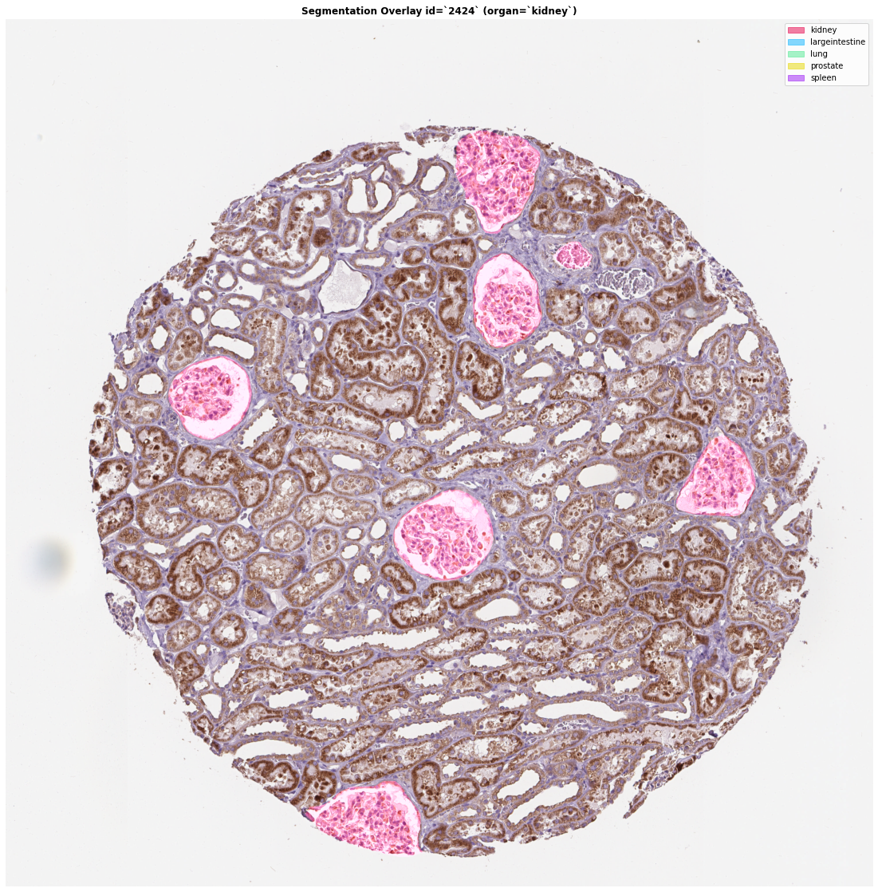

DeepMedical Final reports
311657007
Dataset
Dataset
Dataset
Material
- Image are in .tiff format
- Image are all microscopic
histopathology images - The RGB channels are staining
with protocol - We aim at segment the FTUs
(Functional Tissue Units) - Data came from difference consortia
HuBMAP and HPA
Dataset
Material
- There are five organs
kidney, large intestine, lung,
spleen and prostate - The origin resolution of the
data are around 3000 pixels - Extra metadata is provided,
but we are not considering it - Difference pixel spacing and
thickness between consortia
| HPA images | Pixel Spacing | Thickness |
|---|---|---|
| kidney | 0.4 μm | 4 μm |
| large intestine | 0.4 μm | 4 μm |
| lung | 0.4 μm | 4 μm |
| spleen | 0.4 μm | 4 μm |
| prostate | 0.4 μm | 4 μm |
| HubMAP images | Pixel Spacing | Thickness |
|---|---|---|
| kidney | 0.5 μm | 10 μm |
| large intestine | 0.2290 μm | 8 μm |
| lung | 0.7562 μm | 4 μm |
| spleen | 0.4945 μm | 5 μm |
| prostate | 6.263 μm | 5 μm |
Data Distribution
Data Distribution
Difficulity
- Binary Class or Multi-class
- Tiled Image or Downscale
- Differ pixel size and thickness
- Domain shifting (adaption)
Difficulity
- Tiled Image or Downscale
- Binary Class or Multi-class
- Differ pixel size and thickness
- Domain shifting (adaption)
Difficulity
- Tiled Image or Downscale
- Binary Class or Multi-class
- Differ pixel size and thickness
- Domain shifting (adaption)
Difficulity
- Tiled Image or Downscale
- Binary Class or Multi-class
- Differ pixel size and thickness
- Domain shifting (adaption)
Orgin resolution is around 3000 pixels, we may loss some local information if we downscale directly
Tiled Image may increase the number of training images, but need to specify the image size, overlap or non-overlap
At testing phase, how to aggregate the tiled image?
Difficulity
- Tiled Image or Downscale
- Binary Class or Multi-class
- Differ pixel size and thickness
- Domain shifting (adaption)
Our goal is to segment the FTUs in the histopathology image no matter what organ the image is
https://www.kaggle.com/code/w3579628328/mmsegmentation-lb0-78-inference-1-5folds/comments
In this report, we consider downscale image
Advantage of Multi-class
- Increase the distance between classes
- The object-class and background
- The object-class and other classes
Disadvantage of Multi-class
- Need more images to train
Difficulity
- Tiled Image or Downscale
- Binary Class or Multi-class
- Differ pixel size and thickness
- Domain shifting (adaption)
Note that the pixel spacing and thickness are difference between training images and testing images
https://www.kaggle.com/code/gunesevitan/pixel-size-and-tissue-thickness-domain-adaptation
There are two ways to eliminate the difference between data
- Change the training data distribution
- Change the testing data distribution
Pixel size adaption
- Relative scale factor can be calculated by training_pixel_size / testing_pixel_size
- For instance, HPA prostate images have 0.4 μm and HuBMAP prostate images have 6.263 μm
pixel size. The rescale factor is 0.4/6.263=0.063
Thickness adaption
- Relative scale factor can be calculated by training_thickness / testing_thickness
- Multiply Saturation channel by 1 + alpha * rescale_factor
- Multiply Value channel by 1 + alpha * rescale_factor
- Luminosity is standardized using staintools package in order reduce artifacts on the
background.
Difficulity
- Tiled Image or Downscale
- Binary Class or Multi-class
- Differ pixel size and thickness
- Domain shifting (adaption)
The following graph show the difference after adaption
Someone has experimental that the augmented not significantly improve model performace
We are not cosidering pixel adaption in this report
Difficulity
- Tiled Image or Downscale
- Binary Class or Multi-class
- Differ pixel size and thickness
- Domain shifting (adaption)
The following graph show the difference between HPA images and HubMAP images
Winning the fight against domain shifting
- Align domains (CycleGAN)
- Increase data diversity
- Decrease data diversity
Difficulity
- Tiled Image or Downscale
- Binary Class or Multi-class
- Differ pixel size and thickness
- Domain shifting (adaption)
https://www.kaggle.com/code/nghihuynh/stain-normalization-staingan-stainnet
Increase data diversity
- Heavy color augmentation
- RGB shift or channel shuffle
- HSV adjustification and HE normalize
Decrease data diversity
- StainGAN: based on CycleGAN to transfer the stain style.
Limitation: complex and might have a risk of introducing some artifacts - StainNet: uses StainGAN as the teacher network,
to learn the color mapping by distillation learning.
Experimental
Material
- We first show how poorly a simple baseline can be
- The evaluations are calculated by Dice coefficient
- The results are shown as following:
| Method | CV | Public LB | Private LB |
|---|---|---|---|
| basline | 0.8574 | 0.28111 | 0.14655 |
| +augmentation | 0.8221 | 0.59358 | 0.49413 |
| +augmentation2 | 0.7804 | 0.61922 | 0.55148 |
| +heavy augmentation | 0.7897 | 0.56008 | 0.48599 |
| +more epochs | 0.7933 | 0.46522 | 0.35205 |
Insights
- In the first trial, there is a large gap between CV score and LB score
- Our goal is to minimize the gap between these two evaluations
- Data augmentation shrinkage the gap between CV score and LB score
- More epochs add to training phase, the LB score drops dramatically
- Heavy data augmentation, but LB score drops dramatically
- CV score on validation data is not referable
How to improve
- Hyperparameters
- Thresholding
- ensemble or TTA
Improvement
- Hyperparameters
- Thresholding
- ensemble or TTA
There are a few ways to improve model robustness
- Larger model architecture
- Decrease the number of batch images
- Increase image resolution
In this report, what we have done is
- Use CoaT as our backbone
- decrease batch size to 1
- Increase image resolution to 1024

Improvement
- Hyperparameters
- Thresholding
- ensemble or TTA

Details
- Difference consortias use differ
thresholds - Difference organs use differ thresholds
- Green region: True Positive
- Red region: False Positive
- Blue region: False Negative
Improvement
- Hyperparameters
- Thresholding
- ensemble or TTA
Possible ensemble techniques
- KFolds, difference models (independent)
- stacking model (FCBFormer[2022])
- Difference image resolution
TTA (Test-Time-Augmentation)
- Heavy Test Time augmentation
- RandomFlip, RandomRotate, ColorJitter
- Weight average, max, min

Experimental
Material
- Now, we change our backbone to CoaT
- Difference thresholds accross five organs
- heavy TTA at inference
| Method | Public LB | Private LB |
|---|---|---|
| CoaT (four folds) | 0.7278 | 0.70878 |
| Hyperparameters | 0.76016 | 0.73552 |
| +Heavy Augmentation | 0.76263 | 0.74008 |
| +Stain Normalization | 0.77215 | 0.75762 |
Insights
- Four folds do make model more stable
- small batch size better than large batch size
- TTA improve model performance but not significantly
- Larger model give the better performance
- Heavy augmentation do improve performance when model is stable
- small threshold (0.1,0.2) at HuBMAP improve significantly
Conclusion
- Generalization Test is
quite different than
traditional tasks - Heavy Augmentation is the
key to eliminate the gap - Heavy Augmentation is
effective compare to stain
normalization
Future Work
- Pixel Size Adaption
- Tissue Thickness Adaption
- Style Transfer
- Tiled Image
- Multi-Class Segmentation
- Ensemble of models
- External data source